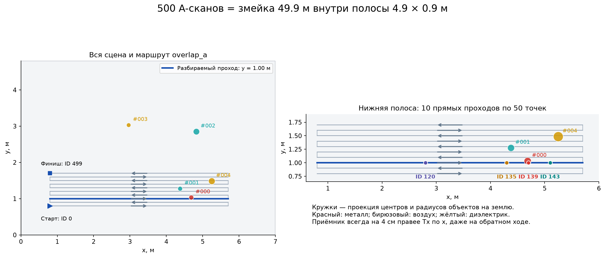
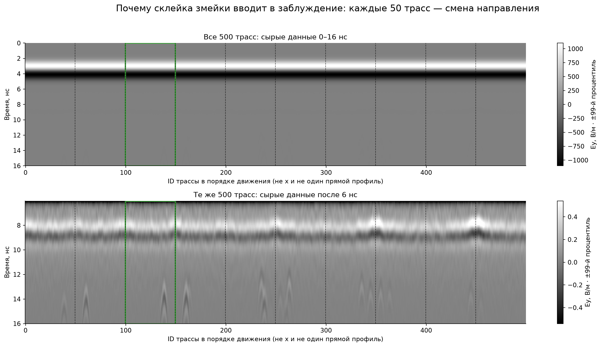
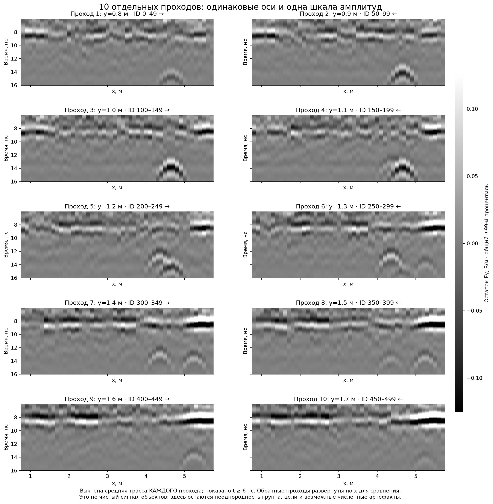
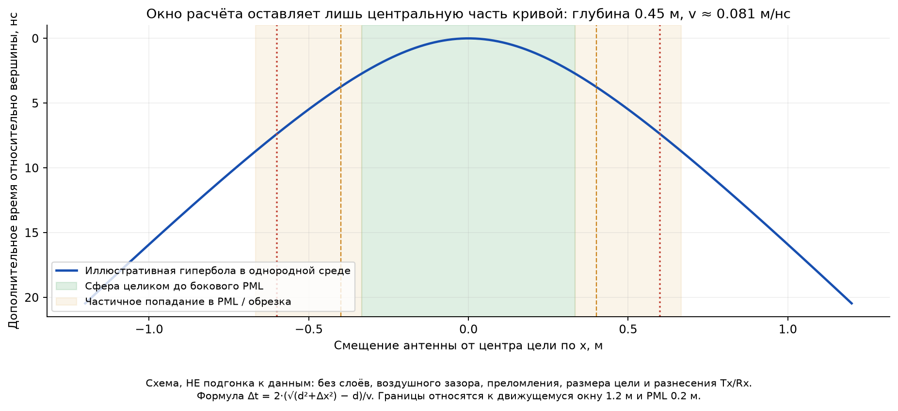

Парк · overlap_a · 500 A-сканов · существующий расчёт · проверка 12 ноября 2026





| ID | Тип | Центр x,y,z, м | Радиус, см | Глубина центра, см |
|---|---|---|---|---|
| object_000 | metal_sphere | 4.686, 1.033, 0.450 | 6.58 | 45.03 |
| object_001 | air_sphere | 4.379, 1.275, 0.475 | 6.40 | 42.47 |
| object_002 | air_sphere | 4.827, 2.848, 0.393 | 8.69 | 50.74 |
| object_003 | dielectric_sphere | 2.964, 3.029, 0.391 | 6.04 | 50.88 |
| object_004 | dielectric_sphere | 5.251, 1.483, 0.427 | 9.05 | 47.30 |
РАЗБОР МАРШРУТА: ПАРК / OVERLAP_A Проверено 12 ноября 2026. Используются уже рассчитанные данные; новых FDTD запусков нет. 1. ЧТО ИМЕННО МЫ РАЗБИРАЕМ Источник: data/final/park/bscan_0.h5. Все 500 трасс завершены, значения конечны, координаты HDF5 совпадают с path_0.npz. В каждой трассе 832 отсчёта; шаг времени 19.258 пс; последний отсчёт 16.0037 нс. Регистрируется компонента Ey в В/м. Это поле в идеальной точке, а не напряжение реального приёмного тракта. Маршрут: 10 прямых проходов по 50 точек. x=0.8…5.7 м, y=0.8…1.7 м; между точками и строками 10 см. Суммарный путь 49.9 м = 10×4.9 + 9×0.1. Это не один прямой 50-метровый профиль. Слева направо, затем справа налево, и так змейкой. В точке разворота ориентация диполя и разнос Rx не поворачиваются: диполь направлен по y, Rx всегда смещён на +4 см по глобальной оси x. Для физического прибора нужно отдельно определить, разворачивается ли он целиком. 2. КАРТА И ВЫБРАННЫЕ СИГНАЛЫ 01_route_map.png: точный путь и проекции всех пяти объектов на землю. Выбран третий прямой проход y=1.00 м, ID 100–149. В нём 50 трасс за 4.9 м. Металлическая сфера #000: центр (4.686, 1.033, 0.450) м, радиус 6.58 см, глубина центра 45.03 см. Воздушная #001 расположена рядом сбоку, поэтому отражения нельзя без проверки приписать одному металлу. На карте кружки означают проекции объёмных сфер, а не их сечения в одной плоскости. 02_ascans.png: ID 120 (x=2.8), 135 (4.3), 139 (4.7), 143 (5.1 м). Верх — полные сырые сигналы; середина — те же сигналы после 6 нс с другой шкалой; низ — поздняя часть после вычитания средней трассы выбранного прохода. CSV содержит исходные значения этих четырёх A-сканов. Никакой нормировки по трассам нет. 3. ЧТО ВИДНО В ДАННЫХ Максимум |Ey| по маршруту = 1124.031 В/м. После 6 нс остаётся 0.00001263% суммы квадратов отсчётов. После вычитания средней трассы всего маршрута остаётся 0.00000596% этой же энергии. Это доли численной энергии записи, НЕ SNR, НЕ энергия объектов и НЕ процент сходства с реальностью. Доминирует общий ранний сигнал. На полных A-сканах четыре кривые почти совпадают. Увеличение позднего участка показывает различия; вычитание среднего подавляет общий фон, но вместе с ним убирает стационарные отражения от слоёв. Остаток не является чистым сигналом цели. Близкие идеальные Tx/Rx без экрана — правдоподобная причина большой прямой связи; её вклад ещё не отделён контролируемым сравнением разных антенн. 4. КАК ПРАВИЛЬНО ЧИТАТЬ B-СКАНЫ 03_straight_bscan.png — один физически прямой профиль. Горизонтальная ось: x в метрах; вертикальная: время в нс с начала расчёта. Это НЕ глубина. Верхняя строка 0–16 нс, нижняя 6–16 нс; слева сырой сигнал, справа удалена средняя трасса этого прохода. У каждого изображения своя симметричная шкала ±99-й процентиль; это явно подписано. Пунктиры отмечают x известных объектов и не доказывают, что видимый пик создан именно ими. 04_whole_route_bscan.png — все 500 трасс в порядке движения, с границами проходов. 05_ten_straight_passes.png — десять отдельных B-сканов с едиными осями и шкалой. На обратных проходах столбцы переставлены по возрастающему x только для отображения. Так можно сопоставлять одни и те же объекты между соседними проходами. 5. ПОЧЕМУ ГИПЕРБОЛЫ МОГУТ ВЫГЛЯДЕТЬ ВЫТЯНУТЫМИ А) Масштаб рисунка и склейка змейки. Растяжение окна картинки меняет вид дуги без изменения физики. Сборка 500 трасс в одну полоску смешивает 10 проходов и 9 разворотов. Б) Время зависит от длины пути Tx→цель→Rx и скорости в грунте. Для совпадающих Tx/Rx, точечной цели в однородном грунте: t(x)=2·sqrt(d²+(x−x0)²)/v. Глубина, скорость, боковое смещение относительно цели и соотношение масштабов осей меняют кривизну. Антенна меняет видимость и форму импульса, но не отменяет эту геометрию. В) В расчёте вырезается окно всего 1.2×1.2 м, а 0.2 м с каждого края занимает PML. Tx находится около центра; до начала бокового PML около 0.4 м, до края 0.6 м. Для сферы радиусом 0.066 м полный объект без попадания в PML доступен только при |Δx|≲0.334 м (при подходящем y). Дальние хвосты физической гиперболы не воспроизводятся как в большой сцене. Могут оставаться пологие вершины и возникать артефакты при входе/выходе объекта. Это ограничение постановки, а не доказательство, что каждая видимая дуга испорчена именно им. Г) Источник Ricker 400 МГц: характерный период 2.5 нс, не точная длительность импульса. Средние Re(εr) в двух слоях: 10.98 и 13.61; оценки c/sqrt(εr): 0.090 и 0.081 м/нс. В нижнем слое длина волны около 0.20 м. Шаг трасс 10 см редкий для аккуратного изображения небольшой цели, а импульс размазывает отражение по времени. Д) Реальные радарограммы часто уже имеют удаление фона, усиление, фильтры и калибровку нулевого времени. Сырые Ey нельзя честно сравнивать с такой картинкой по форме и контрасту без согласования обработки. 06_window_and_hyperbola.png показывает ограничение окна на аналитической схеме. Это не подгонка к нашим данным: схема не учитывает слои, преломление, воздушный зазор, размер цели и разнос Tx/Rx. При d=0.450 м смещение±0.4 м даёт лишь 3.74 нс дополнительного хода в этой схеме. 6. МОЖНО ЛИ ПОСТАВИТЬ ДРУГИЕ Tx/Rx Да. Сейчас это идеальный y-диполь и точечный приёмник Ey, разнос 4 см, высота 6 см. Реалистичная геометрия антенны, экран, питание, нагрузка и выходной тракт могут сильно изменить прямую связь, звон, диаграмму направленности и зарегистрированный A-скан. В официальной библиотеке есть модель, подобная GSSI 400 МГц, с заявленной сеткой 2 мм. Это лучше согласуется с исходной частотой, чем произвольная замена на 1.5 ГГц, но не гарантирует сходства с неизвестным реальным прибором. Текущий расчёт поля идёт на 1 см; просто подключить такую модель и оставить 1 см нельзя. При одинаковом объёме переход 1 см→2 мм даёт примерно 125 раз больше ячеек и 5 раз больше временных шагов (идеализированная оценка вычислительной работы~625 раз, не замер времени). Геометрия грунта 2 см при этом тоже требует отдельного осмысленного решения. Практичный следующий эксперимент: один прямой проход над известной целью, 20–50 позиций на небольшом участке, шаг 2–5 см, одинаковый грунт/seed; сравнить идеальную пару и выбранную антенну, отдельно проверить более широкое окно. Для чистого отклика цели нужна парная сцена с ней и без неё. Только после этого масштабировать на тысячи трасс. Изменять разнос/частоту ради красивой гиперболы без привязки к прибору — не калибровка реального георадара. 7. ОГРАНИЧЕНИЯ ВЫВОДОВ Этот разбор подтверждает структуру маршрута и объясняет ограничения просмотра. Он не подтверждает реализм прибора, не даёт процента сходства с IRL и не заменяет проверку сходимости/границ/парных object–no-object расчётов. Сферы малые,5 целей идеализированы, грунт имеет плоские слои. Данные и исходные результаты не изменены. ИСТОЧНИКИ Документация gprMax: B-скан металлического цилиндра: https://docs.gprmax.com/en/latest/examples_simple_2D.html Документация gprMax: готовые антенные модели: https://docs.gprmax.com/en/latest/inc_GPRAntennaModels.html Sensors & Software: физика гипербол и определение глубины: https://www.sensoft.ca/georadar/lmx200-online-manual/ USGS: оценка скорости по отражениям и гиперболам: https://pubs.usgs.gov/of/1990/0414/report.pdf
Текст отчёта · Все числа (JSON) · Четыре A-скана (CSV) · Координаты прямого прохода (CSV)